嵌入式笔记整理
第一章 嵌入式系统设计基础
1.1 嵌入式系统概述
1.1.1 什么是嵌入式系统
嵌入式系统是以应用为中心，以计算机技术为基础，软件、硬件可剪裁，以适用于应用系统对功能、可靠性、成本、体积、功耗等要求严格的专用计算机系统。
1.1.2 嵌入式系统的技术特点
四大特性：专用性、低成本、可裁剪性、可靠性
1.1.3 嵌入式系统的组成
分为硬件设备和软件设备，嵌入式处理器->硬件核心。
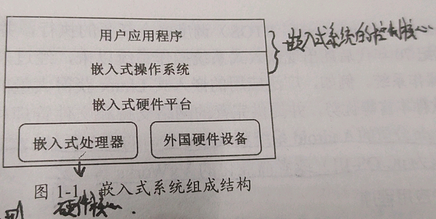1）嵌入式处理器类型
微控制器(MCU)；嵌入式微处理器(MPU)；数字信号处理器(DSP)；片上系统(Soc)
2）嵌入式操作系统
谷歌的Android系统和苹果的iOS系统。实时操作系统常用免费的uC/OS-II或者商业化的VxWorks等。
1.2 嵌入式系统的开发
1.2.1 嵌入式系统的开发模式
宿主机-目标机(开发模式)
第二章 ARM Cortex-M3 处理器
2.2 Cortex-M3 处理器
- CM3的功能模块
高性能32位RISC处理器；大量寄存器，都可用于多种用途；采用Thumb指令集结构；3级流水线（取指-译码-执行）；采用哈佛存储结构；高级微控制器总线结构
CM3的两个状态两个级别两种模式
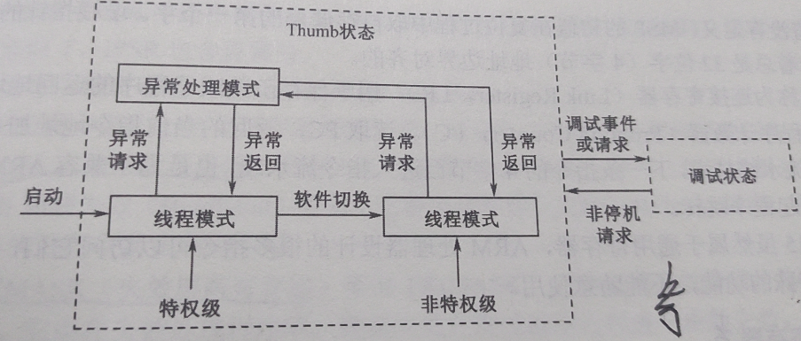- 两个状态：Thumb状态、调试状态
- 两个级别：特权级、非特权级
- 两种模式：异常处理模式、线程模式
2.3 寄存器
1.通用寄存器
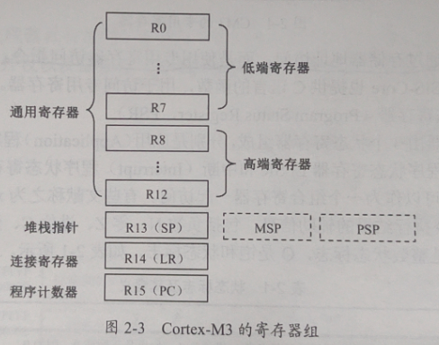CM3设计有16个32位通用寄存器，R0~R12是真正意义上的通用寄存器。
2.专用寄存器
专用寄存器不通过存储器地址访问，而是使用专用寄存器访问指令
程序状态寄存器(Program Status Register,PSR)
异常屏蔽位寄存器(Exception Mask Register)
2.4 存储器组织
1.位带区
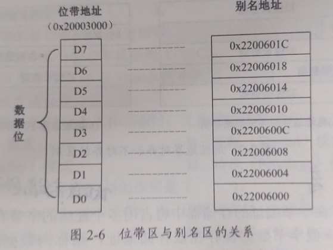别名地址=位带基地址+字节偏移量×32+位号×4
位带基地址通常情况下为:0x22000以及0x42000
字节偏移量根据要访问的位带地址距离基地址0x2000和0x4000的偏移值
位号：题目会给
2.字节存储顺序
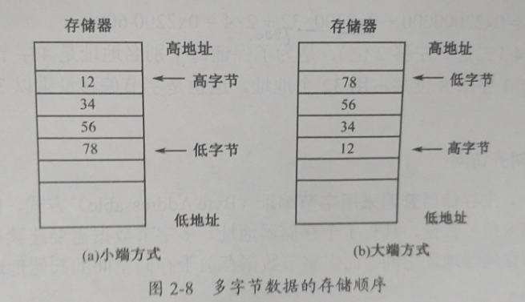低位低，高位高（小端存储）；高位低，低位高（大端存储）
第四章 STM32 微控制器
4.1 STM32微控制器结构
4.1.2 STM32系统结构
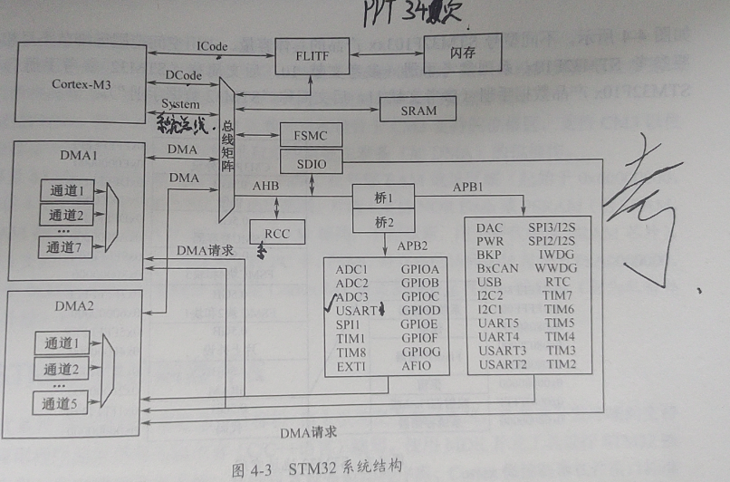- 通用输入/输出端口(GPIO)以及复用功能的输入/输出端口(AFIO)
- 通用同步/异步接收发送器(USART)；通用异步接收发送器(UART)
- 串行外设接口(SPI)
- 内部集成电路I2C接口(I2C)
- 看门狗(Watch Dog)，独立看门狗(IWDG)和窗口看门狗(WWDG)
- 实时时钟(RTC)
- 通用定时器(TIMx)
- 模拟/数字转换器ADC
| 缩写 | 外设名称 | 缩写 | 外设名称 |
|---|---|---|---|
| adc | A/D转换器 | bkp | 备份寄存器 |
| can | CAN控制器局域网 | cec | 消费电子单元 |
| crc | CRC计算单元 | dac | D/A转换器 |
| dbgmc | MCU调试模块 | dma | DMA控制器 |
| exti | 外部中断寄存器 | flash | 闪存 |
| fsmc | 灵活的静态存储器控制器 | gpio | 通用I/O接口 |
| i2c | I²C总线接口 | iwdg | 独立看门狗 |
| pwr | 电源控制 | rcc | 复位和时钟控制器 |
| rtc | 实时时钟 | sdio | SD存储卡接口 |
| spi | SPI串行外设接口 | tim | 定时器 |
| usart | 通用同步异步收发器 | wwdg | 窗口看门狗 |
4.2 STM32微控制器开发
4.2.3 C语言应用
2. C语言的位操作
1 | a &= ~(1<<6) //位与实现复位:将整形变量a的D6位清零，其他位不变。 |
4.3 复位与时钟控制(RCC)
1. 电源控制
3种低功耗模式
睡眠模式(Sleep Mode)
停止模式(Stop Mode)
备用模式(Standby Mode)
2. 复位
三种复位：系统复位、电源复位和备份复位
3. 时钟树
系统时钟 SYSCLK
内部高速时钟HIS、高速外部时钟HSE和锁相环PLL
第五章 STM32的通用I/O端口
5.1 GPIO的结构和功能
GPIO一共112个引脚，用GPIOx(x是A、B、C、D、E、F、G)表示，即GPIOA GPIOB … GPIOG。每组端口有16个外设引脚，分别用Px0,Px1,…Px15(x是A~G)表示。
1.输入模式
4种输入模式：
- 模拟输入模式(Analog): 不上拉也不下拉
- 浮空输入模式(Input Floating): 不上拉也不下拉
- 上拉输入模式(Input Pull-up): 接上拉电阻
- 下拉输入模式(Input Pull-down): 接下拉电阻
2. 输出模式
4中输出模式，但是常用以下两种输出模式:
推挽输出(Output Push-Pull)
开漏输出(Output Open-Drain)
5.3 GPIO 案例
5.3.2 应用程序分析
1. 开启外设时钟
2. 初始化外设
3. 控制外设工作
第六章 CM3异常和STM32中断
6.1 Cortex-M3 的异常
2.异常优先级
优先级的数值越小，优先级越高
组优先级（Group Priority）和子优先级(Sub-Priority)。组优先级被称为抢占优先级。
组优先级确定是否可以打断正在执行的中断，实现嵌套。子优先级只用于在相同组优先级时多个子优先级同时出现的情况，高优先级别（优先级数值小）的异常首先被处理。
3. 嵌套向量中断控制器NVIC
NVIC 集成在 ARM Cortex-M3 内核中
6.2 STM32的中断应用
6.2.1 NVIC 初始化配置
1. 配置组优先级
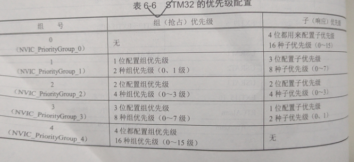6.2.2 外部中断EXTI
STM32 芯片外设的中断请求直接连接到 NVIC，来自芯片之外的外设中断请求需要通过EXTI（外部中断/事件控制器）连接到NVIC。
2. EXTI 寄存器
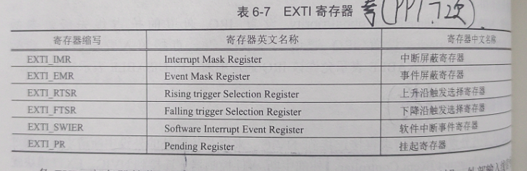 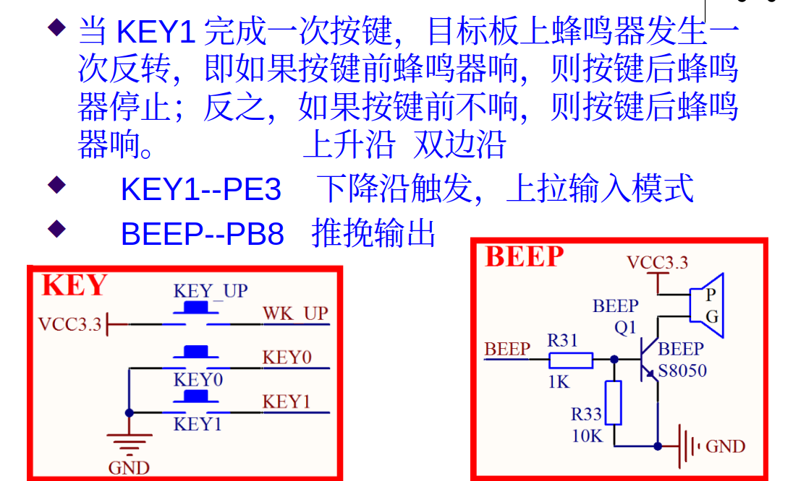第七章 STM32 的串行通信接口
7.1 串行异步通信
串行通信有两类：一类是速度较快的同步串行通信，以数据块为基本传输单位，主要应用于网络连接；另一类是速度较慢的异步通信，以字符为单位传输，主要应用于近距离通信。通常所说的串行通信一般是指串行同步通信
7.1.1 串行异步通信字符格式
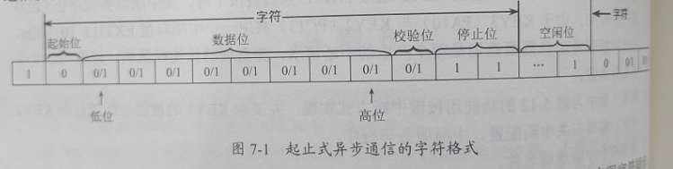起始位(Start Bit): 采取逻辑 0 电平
数据位(Data Bit): 一般是8位
校验位(Parity Bit): 可有可无，一般是奇偶校验位
停止位(Stop Bit): 字符最后必须有停止位，采取逻辑1电平
通信传输速率要相同，如9600bps表示一秒传输9600位
7.1.2 串行异步通信接口
1. RS-232标准的引脚定义
- TxD(Transmitted Data,发送数据)
- RxD(Received Data, 接收数据)
- RTS(Request To Send，请求发送)
- CTS(Clear To Send，清除发送)
- DTR(Data Terminal Ready，数据终端准备好)
- DSR(Data Set Ready，数据装置准备好)
- GND(Ground，信号地)
- CD(Carrier Detected，载波检测)
- RI(RIng Indicator，振铃指示)
2. RS-232接口的连接
三线相连
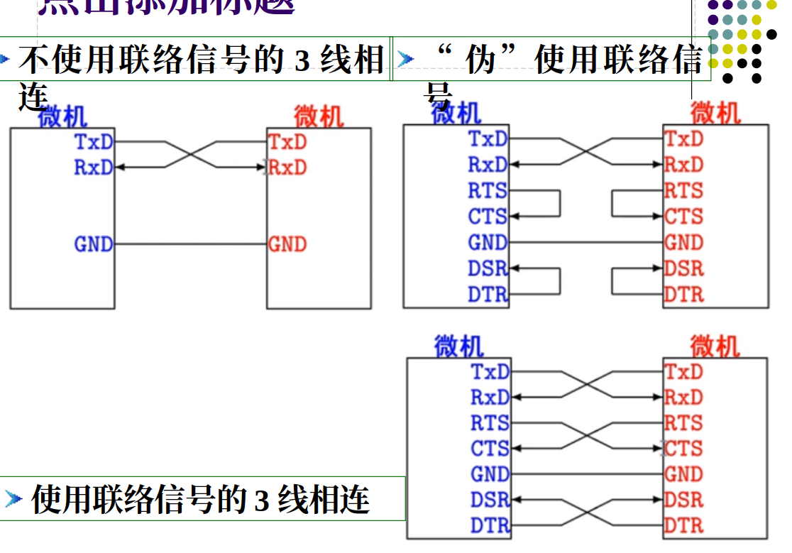7.2 通用同步/异步接收/发送器
通用同步/异步接收/发送器（USART）和通用异步接收/发送器(UART)